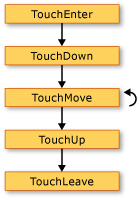
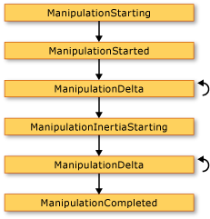
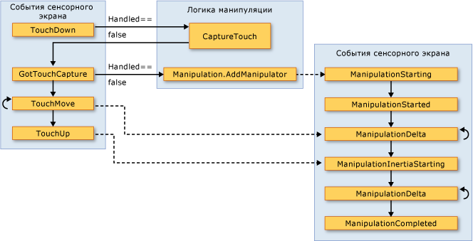

Общие сведения о входных данных
Windows Presentation Foundation (WPF) Подсистема предоставляет мощный API для получения входных данных из широкого спектра устройств, включая мышь, клавиатура, сенсорного ввода и пера. В этом разделе описываются службы, предоставляемые WPF, и объясняется архитектура систем ввода.
API ввода
Основные входные данные API находится в классах базовых элементов: UIElement, ContentElement, FrameworkElement, и FrameworkContentElement. Дополнительные сведения о базовых элементах см. в разделе Обзор базовых элементов. Эти классы предоставляют функциональность для входных событий, связанных, например, с нажатием клавиш, кнопками мыши, колесиком мыши, движением мыши, управлением фокусом и захватом мыши. Благодаря помещению API ввода в базовые элементы, вместо того чтобы рассматривать все события ввода как службу, архитектура ввода позволяет событиям ввода поступать от конкретного объекта в пользовательском интерфейсе и поддерживать схему маршрутизации событий, при которой более чем один элемент имеет возможность обрабатывать событие ввода. Многие события ввода имеют пару связанных с ними событий. Например, событие нажатия клавиши связан с KeyDown и PreviewKeyDown события. Различие этих событий заключается в способе их маршрутизации в целевой элемент. События предварительного просмотра проходят вниз по дереву элементов от корневого элемента в целевой элемент. События восходящей маршрутизации поднимаются от целевого элемента в корневой элемент. Маршрутизация событий в WPF рассматривается более подробно далее в этом обзоре и в разделе Общие сведения о перенаправленных событиях.
Классы Keyboard и Mouse
В дополнение к входные данные API в классах базовых элементов, Keyboard класс и Mouse классы предоставляют дополнительные API для работы с клавиатуру и мышь.
Примеры входных данных API на Keyboard класса Modifiers свойство, которое возвращает ModifierKeys в данный момент нажата и IsKeyDown метод, который определяет, нажата ли указанный ключ.
В следующем примере используется GetKeyStates метод на предмет Key находится в нерабочем состоянии.
// Uses the Keyboard.GetKeyStates to determine if a key is down.
// A bitwise AND operation is used in the comparison.
// e is an instance of KeyEventArgs.
if ((Keyboard.GetKeyStates(Key.Return) & KeyStates.Down) > 0)
{
btnNone.Background = Brushes.Red;
}
Warning
It looks like the sample you are looking for does not exist.
Примеры входных данных API на Mouse класса MiddleButton, который получает состояние средней кнопки мыши, и DirectlyOver, получающий указатель мыши на элемент наведен.
В следующем примере определяется ли LeftButton мыши находится в Pressed состояние.
if (Mouse.LeftButton == MouseButtonState.Pressed)
{
UpdateSampleResults("Left Button Pressed");
}
Warning
It looks like the sample you are looking for does not exist.
Mouse И Keyboard классы рассматриваются более подробно в этом обзоре.
Ввод с помощью пера
WPF предусмотрена встроенная поддержка Stylus. Stylus — Рукописный ввод, ставший популярным благодаря Планшетный ПК. WPF приложения могут обрабатывать перо как мышь с помощью мыши API, но WPF также предоставляет перо как абстрактное устройство, используйте модель, аналогичную клавиатуру и мышь. Все связанные с пером API - интерфейсы содержат слово Stylus.
Поскольку перо может действовать как мышь, приложения, поддерживающие только ввод с помощью мыши, по-прежнему могут автоматически получать определенный уровень поддержки пера. При использовании пера таким образом приложение получает возможность обработать соответствующее событие пера, а затем обрабатывает соответствующее событие мыши. Кроме того, через абстрактное устройство «перо» доступны также службы более высокого уровня, например рукописный ввод. Дополнительные сведения о рукописном вводе см. в разделе Начало работы с рукописным вводом.
Маршрутизация событий
Объект FrameworkElement может содержать другие элементы, как дочерние элементы в своей модели содержимого, формируя тем самым дерево элементов. В WPF родительский элемент может участвовать во вводе, направленном в его дочерние элементы или другие потомки, путем обработки событий. Это особенно полезно для построения элементов управления из меньших элементов управления; этот процесс называется «составление элемента управления» или «компоновка». Дополнительные сведения о деревьях элементов и их связи с маршрутами событий см. в разделе Деревья в WPF.
Маршрутизация событий — это процесс направления событий в несколько элементов, так что конкретный объект или элемент в маршруте может выбрать предоставление значительного отклика (посредством обработки) на событие, которое могло быть получено от другого элемента. Перенаправленные события используют один из трех механизмов маршрутизации: прямую маршрутизацию, восходящую маршрутизацию и туннелирование. При прямой маршрутизации уведомляется только исходный элемент и событие не перенаправляется ни в какие другие элементы. Тем не менее событие с прямой маршрутизацией предоставляет некоторые дополнительные возможности, доступные только для перенаправленных событий, в отличие от стандартных событий CLR. Восходящая маршрутизация работает вверх по дереву элементов, уведомляя элемент, который является источником события, затем его родительский элемент и т. д. Туннелирование начинается в корне дерева элементов и работает вниз, заканчивая элементом, который является источником. Дополнительные сведения о перенаправленных событиях см. в разделе Общие сведения о перенаправленных событиях.
WPF события ввода обычно представлены парами, состоящими из событий нисходящей и восходящей маршрутизации событий. События нисходящей маршрутизации отличаются от событий восходящей маршрутизации префиксом Preview. Например PreviewMouseMove является нисходящей версией события перемещения мыши и MouseMove — восходящей версией этого события. Такое связывание событий представляет собой соглашение, которое реализуется на уровне элемента и не является неотъемлемой характеристикой системы событий WPF. Дополнительные сведения см. в разделе «События ввода WPF» статьи Общие сведения о перенаправленных событиях.
Обработка событий ввода
Для получения входных данных в элементе обработчик событий должен быть связан с данным конкретным событием. В XAML это осуществляется напрямую: вы указываете имя события в качестве атрибута элемента, который будет перехватывать это событие. Затем в качестве значения этого атрибута вы задаете имя обработчика событий, который можно определить на основе делегата. Обработчик событий должен быть написан код, например C# и может быть включено в файл с выделенным кодом.
События клавиатуры возникают, когда операционная система сообщает о действиях клавиш, которые происходят, когда фокус клавиатуры находится в элементе. События мыши и пера делятся на две категории: события, сообщающие об изменениях положения указателя относительно элемента, и события, сообщающие об изменениях состояния кнопок устройства.
Пример события ввода с клавиатуры
В следующем примере перехватывается событие нажатия клавиши со стрелкой влево. Объект StackPanel создается, имеет Button. Обработчик событий для ожидания нажатия клавиши со стрелкой влево присоединяется к Button экземпляра.
Первый раздел примера создает StackPanel и Button и присоединяет обработчик событий для KeyDown.
<StackPanel>
<Button Background="AliceBlue"
KeyDown="OnButtonKeyDown"
Content="Button1"/>
</StackPanel>
// Create the UI elements.
StackPanel keyboardStackPanel = new StackPanel();
Button keyboardButton1 = new Button();
// Set properties on Buttons.
keyboardButton1.Background = Brushes.AliceBlue;
keyboardButton1.Content = "Button 1";
// Attach Buttons to StackPanel.
keyboardStackPanel.Children.Add(keyboardButton1);
// Attach event handler.
keyboardButton1.KeyDown += new KeyEventHandler(OnButtonKeyDown);
Warning
It looks like the sample you are looking for does not exist.
Второй раздел прописывается в коде, и в нем определяется обработчик событий. При нажатии клавиши со стрелкой влево и Button имеет фокус клавиатуры, запускается обработчик и Background цвет Button изменяется. При нажатии клавиши, но это не клавиша со стрелкой влево, Background цвет Button изменяется обратно на первоначальный.
private void OnButtonKeyDown(object sender, KeyEventArgs e)
{
Button source = e.Source as Button;
if (source != null)
{
if (e.Key == Key.Left)
{
source.Background = Brushes.LemonChiffon;
}
else
{
source.Background = Brushes.AliceBlue;
}
}
}
Warning
It looks like the sample you are looking for does not exist.
Пример события ввода с помощью мыши
В следующем примере Background цвет Button меняется, когда указатель мыши попадает Button. Background Цвет восстанавливается в том случае, когда указатель мыши покидает Button.
Первый раздел примера создает StackPanel и Button управления и присоединяет обработчики событий для MouseEnter и MouseLeave событий Button.
<StackPanel>
<Button Background="AliceBlue"
MouseEnter="OnMouseExampleMouseEnter"
MouseLeave="OnMosueExampleMouseLeave">Button
</Button>
</StackPanel>
// Create the UI elements.
StackPanel mouseMoveStackPanel = new StackPanel();
Button mouseMoveButton = new Button();
// Set properties on Button.
mouseMoveButton.Background = Brushes.AliceBlue;
mouseMoveButton.Content = "Button";
// Attach Buttons to StackPanel.
mouseMoveStackPanel.Children.Add(mouseMoveButton);
// Attach event handler.
mouseMoveButton.MouseEnter += new MouseEventHandler(OnMouseExampleMouseEnter);
mouseMoveButton.MouseLeave += new MouseEventHandler(OnMosueExampleMouseLeave);
Warning
It looks like the sample you are looking for does not exist.
Второй раздел примера прописывается в коде, и в нем определяются обработчики событий. Когда указатель мыши перемещается Button, Background цвет Button изменяется на SlateGray. Когда указатель мыши покидает Button, Background цвет Button изменяется обратно на AliceBlue.
private void OnMouseExampleMouseEnter(object sender, MouseEventArgs e)
{
// Cast the source of the event to a Button.
Button source = e.Source as Button;
// If source is a Button.
if (source != null)
{
source.Background = Brushes.SlateGray;
}
}
Warning
It looks like the sample you are looking for does not exist.
private void OnMosueExampleMouseLeave(object sender, MouseEventArgs e)
{
// Cast the source of the event to a Button.
Button source = e.Source as Button;
// If source is a Button.
if (source != null)
{
source.Background = Brushes.AliceBlue;
}
}
Warning
It looks like the sample you are looking for does not exist.
Текстовый ввод
TextInput Событие позволяет ожидать ввода текста в аппаратно независимым способом. Клавиатура является основным средством ввода текста, но текст также можно вводить и с помощью речи, рукописного ввода и других устройств.
Для ввода с клавиатуры WPF сначала отправляет соответствующие KeyDown / KeyUp события. Если эти события не обрабатываются и клавиша является текстовой, а не (управляющей, например клавишей со стрелкой) или функциональные клавиши, а затем TextInput события. Не всегда существует простое однозначное сопоставление между KeyDown / KeyUp и TextInput события, так как несколькими нажатиями клавиш можно создать один символ для ввода текста и единственным нажатием клавиши можно создавать Многосимвольные строки. В первую очередь это относится к таким языкам, как китайский, японский и корейский, которые используют Редакторы метода ввода (IME) для формирования тысяч возможных символов в соответствующем алфавите.
Когда WPF отправляет KeyUp / KeyDown событий, Key присваивается Key.System если нажатие клавиш может стать частью TextInput событий (если ALT + S нажата, например). Это позволяет коду в KeyDown обработчик событий на наличие Key.System и, если он найден, оставить обработку обработчику сгенерированного впоследствии TextInput событий. В этом случае различные свойства TextCompositionEventArgs аргумента может быть использована для определения исходных нажатий клавиш. Аналогично Если IME активен, Key имеет значение Key.ImeProcessed, и ImeProcessedKey дает исходное нажатие клавиши или клавиш.
В следующем примере определяется обработчик для Click событием и обработчиком для KeyDown событий.
Первый сегмент кода или разметки создает пользовательский интерфейс.
<StackPanel KeyDown="OnTextInputKeyDown">
<Button Click="OnTextInputButtonClick"
Content="Open" />
<TextBox> . . . </TextBox>
</StackPanel>
// Create the UI elements.
StackPanel textInputStackPanel = new StackPanel();
Button textInputeButton = new Button();
TextBox textInputTextBox = new TextBox();
textInputeButton.Content = "Open";
// Attach elements to StackPanel.
textInputStackPanel.Children.Add(textInputeButton);
textInputStackPanel.Children.Add(textInputTextBox);
// Attach event handlers.
textInputStackPanel.KeyDown += new KeyEventHandler(OnTextInputKeyDown);
textInputeButton.Click += new RoutedEventHandler(OnTextInputButtonClick);
Warning
It looks like the sample you are looking for does not exist.
Второй сегмент кода содержит обработчики событий.
private void OnTextInputKeyDown(object sender, KeyEventArgs e)
{
if (e.Key == Key.O && Keyboard.Modifiers == ModifierKeys.Control)
{
handle();
e.Handled = true;
}
}
private void OnTextInputButtonClick(object sender, RoutedEventArgs e)
{
handle();
e.Handled = true;
}
public void handle()
{
MessageBox.Show("Pretend this opens a file");
}
Warning
It looks like the sample you are looking for does not exist.
Поскольку входные события поднимаются по восходящему маршруту события, StackPanel получает входные данные, независимо от того, какой элемент имеет фокус клавиатуры. TextBox Сначала уведомляется элемент управления и OnTextInputKeyDown обработчик вызывается, только в том случае, если TextBox не обработала входные данные. Если PreviewKeyDown событий используется вместо KeyDown событий, OnTextInputKeyDown сначала вызывается обработчик.
В этом примере логика обработки пишется два раза — один раз для CTRL+O и еще один раз для события нажатия кнопки. Это можно упростить, если вместо прямой обработки событий ввода использовать команды. Команды описываются в этом обзоре и в разделе Общие сведения о системе команд.
Касание и манипуляция
Новое оборудование и API в операционной системе Windows 7 дают приложениям возможность получать входные данные от нескольких касаний одновременно. WPF позволяет приложениям обнаруживать сенсорный ввод и реагировать так же, как отвечать на другие входные данные, например мыши или клавиатуры, путем создания событий при возникновении сенсорного ввода.
WPF предоставляет два типа событий при возникновении сенсорного ввода: события касания и события манипуляции. События касания предоставляют необработанные данные о каждом пальце на сенсорном экране и его перемещениях. События манипуляции интерпретируют ввод как определенные действия. В этом разделе рассматриваются оба типа событий.
Предварительные требования
Для разработки приложений, реагирующих на сенсорный ввод, необходимы следующие компоненты.
Visual Studio 2010.
Windows 7.
Устройство, которое поддерживает Windows Touch, например сенсорный экран.
Терминология
При обсуждении сенсорного ввода используются следующие термины.
Касание — это тип ввода пользователя, распознаваемый Windows 7. Обычно касание инициируется, когда пользователь прикасается пальцами к сенсорному экрану. Обратите внимание, что такие устройства, как сенсорная панель, обычно используемая в ноутбуках, не поддерживают касание, если подобное устройство просто преобразует положение и движение пальца как ввод с помощью мыши.
Мультикасание — это касание, которое происходит одновременно в нескольких точках. Windows 7 и WPF поддерживают мультикасание. Всякий раз, когда в документации для WPF идет речь о касании, это относится и мультикасанию.
Манипуляция происходит, когда касание интерпретируется как физическое действие, которое применяется к объекту. В WPF, события манипуляции интерпретируют ввод как сдвиг, расширение или поворот.
touch device— это устройство для сенсорного ввода, например одним пальцем на сенсорном экране.
Элементы управления, реагирующие на касания
Следующие элементы управления можно прокручивать, проводя пальцем по элементу управления, если имеется содержимое, которое находится вне области просмотра.
ScrollViewer Определяет ScrollViewer.PanningMode присоединенного свойства, можно указать сдвига включении по горизонтали, вертикали, оба или ни одного. ScrollViewer.PanningDeceleration Свойство определяет, насколько быстро замедляется прокрутка, когда пользователь поднимает палец с сенсорного экрана. ScrollViewer.PanningRatio Присоединенное свойство задает отношение смещения прокрутки к смещению обработки преобразования.
События касания
Базовые классы, UIElement, UIElement3D, и ContentElement, определяют события, вы можете подписаться на, чтобы приложение реагировало на касания. События касания полезны в тех случаях, когда приложение интерпретирует касание не как действие с объектом. Например, приложение, в котором пользователь может рисовать одним или несколькими пальцами, будет подписываться на события касания.
Все эти три класса определяют следующие события, которые ведут себя одинаково независимо от определяющего класса.
Как и события клавиатуры и мыши, события сенсорного ввода являются перенаправленными событиями. События нисходящей маршрутизации начинаются с Preview, а события восходящей маршрутизации — с Touch. Дополнительные сведения о перенаправленных событиях см. в разделе Общие сведения о перенаправленных событиях. При обработке этих событий можно получить положение ввода относительно любого элемента, вызвав GetTouchPoint или GetIntermediateTouchPoints метод.
Чтобы лучше объяснить взаимодействие между событиями касания, рассмотрим ситуацию, когда пользователь помещает один палец в элемент, а затем убирает палец из этого элемента. На следующем рисунке показано выполнение событий восходящей маршрутизации (для простоты события нисходящей маршрутизации не указаны).
 события касания
Последовательность событий на предыдущем рисунке приведена в следующем списке.
TouchEnter Событие происходит один раз, когда пользователь помещает палец в элемент.
TouchDown Событие происходит один раз.
TouchMove Событие возникает несколько раз, когда пользователь перемещает палец в пределах элемента.
TouchUp Событие происходит один раз, когда пользователь убирает палец из этого элемента.
TouchLeave Событие происходит один раз.
При использовании более двух пальцев, события возникают для каждого пальца.
События манипуляции
Для случаев, когда приложение позволяет манипулировать объектом UIElement класс определяет события манипуляции. В отличие от событий касания, которые сообщают только положение точки касания, события манипуляции сообщают, как можно интерпретировать ввод. Существует три типа манипуляции: сдвиг, расширение и поворот. В следующем списке показывается, как вызываются эти три типа манипуляции.
Поместите палец на объект и переместите палец по сенсорному экрану, чтобы выполнить сдвиг. Обычно такое действие перемещает объект.
Поместите два пальца на объект и сведите или разведите их, чтобы выполнить расширение. Обычно такое действие изменяет размеры объекта.
Поместите два пальца на объект и поворачивайте их вокруг друг друга, чтобы выполнить действие поворота. Обычно такое действие выполняет циклический сдвиг объекта.
Можно одновременно выполнять несколько типов манипуляций.
Реализуя реагирование объектов на манипуляции, можно создать видимость инерции объекта. Тогда объекты смогут имитировать физический мир. Например, если вы достаточно сильно толкнете книгу по столу, то после того как вы ее отпустите, она продолжит движение. WPF позволяет имитировать это поведение путем вызова событий манипуляции после пальцы пользователя отпускают объект.
Сведения о том, как создать приложение, которое позволяет пользователю перемещать, масштабировать и поворачивать объект, см. в разделе Пошаговое руководство: Создание первого приложения Touch.
UIElement Определяет следующие события манипуляции.
По умолчанию UIElement не получает эти события манипуляции. Для получения событий манипуляции на UIElement, задайте UIElement.IsManipulationEnabled для true.
Путь выполнения событий манипуляции
Рассмотрим сценарий, когда пользователь «бросает» объект. Пользователь ставит палец на объект, перемещает палец по сенсорному экрану на короткое расстояние, а затем поднимает палец, когда тот еще движется. В результате объект будет перемещаться под пальцем пользователя и продолжит движение после того, как пользователь поднимет палец.
На следующем рисунке показан путь выполнения событий манипуляции и важные сведения о каждом событии.
 события манипуляции
Последовательность событий на предыдущем рисунке приведена в следующем списке.
ManipulationStarting Событие происходит, когда пользователь ставит палец на объект. Помимо прочего, это событие позволяет задать ManipulationContainer свойства. В последующих событиях позиция манипуляции будет относительно ManipulationContainer. В событиях, отличных от ManipulationStarting, это свойство доступно только для чтения, поэтому ManipulationStarting событий — это единственный случай, когда это свойство можно задать.
ManipulationStarted Далее возникает событие. Это событие сообщает исходную точку манипуляции.
ManipulationDelta Событие возникает несколько раз, как пальцы пользователя двигаются по сенсорному экрану. DeltaManipulation Свойство ManipulationDeltaEventArgs класса сообщает ли интерпретируется манипуляция — как движение, расширение или преобразование. Здесь вы выполняете большую часть манипуляций с объектом.
ManipulationInertiaStarting Событие происходит, когда палец пользователя теряет контакт с объектом. Это событие позволяет указать замедление манипуляции во время инерции. Так объект может имитировать разные физические расстояния или атрибуты при вашем желании. Например, предположим, что в приложении имеются два объекта, представляющие элементы в физическом мире, один из которых тяжелее другого. Можно сделать так, чтобы более тяжелый объект замедлялся быстрее, чем более легкий.
ManipulationDelta Событие возникает несколько раз, как происходит инерции. Обратите внимание, что это событие возникает, и когда пальцы пользователя двигаются по сенсорному экрану, и когда WPF имитирует инерцию. Другими словами ManipulationDelta возникает до и после ManipulationInertiaStarting событий. ManipulationDeltaEventArgs.IsInertial Отчеты свойство ли ManipulationDelta событие возникает во время инерции, чтобы можно было проверять это свойство и выполнять разные действия в зависимости от его значения.
ManipulationCompleted Событие возникает при завершении манипуляции и инерция. То есть после всех ManipulationDelta событиями, ManipulationCompleted возникает событие завершении манипуляции.
UIElement Также определяет ManipulationBoundaryFeedback событий. Это событие возникает, когда ReportBoundaryFeedback метод вызывается в ManipulationDelta событий. ManipulationBoundaryFeedback Событий позволяет приложениям или компонентам обеспечивать визуальную обратную связь, когда объект достигает границы. Например Window класса дескрипторов ManipulationBoundaryFeedback событие, чтобы окно слегка перемещения при достижении его границы.
Манипуляцию можно отменить, вызвав Cancel метод в аргументах события в любого события манипуляции, за исключением ManipulationBoundaryFeedback событий. При вызове Cancel, события манипуляции больше не вызываются и для касания возникают события мыши. В следующей таблице описывается связь между моментом отмены манипуляции и событиями мыши, которые происходят.
| Событие, вызываемое отменой | События мыши, возникающие для ввода, который уже произошел |
|---|---|
| ManipulationStarting и ManipulationStarted | События нажатия кнопки мыши. |
| ManipulationDelta | События нажатия кнопки мыши и перемещения мыши. |
| ManipulationInertiaStarting и ManipulationCompleted | События нажатия кнопки мыши, перемещения мыши и отпускания кнопки мыши. |
Обратите внимание, что при вызове метода Cancel во время манипуляции по инерции, метод возвращает false и входных данных не вызывает события мыши.
Связь между событиями касания и событиями манипуляции
Объект UIElement всегда может получать события касания. Когда IsManipulationEnabled свойству true, UIElement может получать события касания и манипуляции. Если TouchDown событие не обрабатывается (то есть Handled свойство false), логика манипуляции захватывает касание элемента и создает события манипуляции. Если Handled свойству true в TouchDown событие, логика манипуляции не создает события манипуляции. На следующем рисунке показана связь между событиями касания и событиями манипуляции.
 события касания и манипуляции
Следующий список описывает связь между событиями касания и манипуляции, показанными на предыдущем рисунке.
Когда первое сенсорное устройство создает TouchDown событий на UIElement, логика манипуляции вызывает CaptureTouch метод, который создает GotTouchCapture событий.
Когда GotTouchCapture происходит, логика манипуляции вызывает Manipulation.AddManipulator метод, который создает ManipulationStarting событий.
Когда TouchMove событиями, логика манипуляции создает ManipulationDelta события, происходящие до ManipulationInertiaStarting событий.
Когда последнее сенсорное устройство элемент вызывает TouchUp событий, логика манипуляции создает ManipulationInertiaStarting событий.
Фокус
Существует два основных понятия, относящихся к фокусу в WPF: фокус клавиатуры и логический фокус.
Фокус клавиатуры
Фокус клавиатуры относится к элементу, получающему ввод с клавиатуры. На всем рабочем столе может быть только один элемент, в котором находится фокус клавиатуры. В WPF, будет иметь элемент, имеющий фокус клавиатуры IsKeyboardFocused присвоено true. Статический Keyboard метод FocusedElement возвращает элемент, который в данный момент имеет фокус клавиатуры.
Фокус клавиатуры можно получить путем перехода к элементу или щелкая мышью определенные элементы, такие как TextBox. Фокус клавиатуры также могут быть получены программно с помощью Focus метод Keyboard класса. Focus пытается передать фокус клавиатуры указанному элементу. Элемент, возвращаемый Focus является элементом, который в данный момент имеет фокус клавиатуры.
Чтобы элемент мог получить фокус клавиатуры Focusable свойство и IsVisible свойства должно быть присвоено true. Некоторые классы, такие как Panel, имеют Focusable присвоено false по умолчанию; таким образом, может потребоваться присвоить этому свойству true Если вы хотите, чтобы элемент мог получить фокус.
В следующем примере используется Focus устанавливается фокус клавиатуры на Button. Рекомендуется устанавливать исходный фокус в приложении начинается в Loaded обработчик событий.
private void OnLoaded(object sender, RoutedEventArgs e)
{
// Sets keyboard focus on the first Button in the sample.
Keyboard.Focus(firstButton);
}
Warning
It looks like the sample you are looking for does not exist.
Дополнительные сведения о фокусе клавиатуры см. в разделе Общие сведения о фокусе.
Логический фокус
Логический фокус относится к FocusManager.FocusedElement в области фокуса. В приложении может быть несколько элементов, имеющих логический фокус, но в отдельной области фокуса может быть только один элемент, имеющий логический фокус.
Область фокуса — это элемент контейнера, который отслеживает FocusedElement внутри своей области. Когда фокус покидает область фокуса, элемент с фокусом теряет фокус клавиатуры, но сохраняет логический фокус. При возвращении фокуса в область фокуса элемент с логическим фокусом получит фокус клавиатуры. Это позволяет переносить фокус клавиатуры между несколькими областями фокуса, но гарантирует, что элемент с фокусом в области фокуса останется элементом с фокусом, когда фокус вернется в эту область.
Элемент может быть включен в область фокуса в Язык XAML , задав FocusManager присоединенное свойство IsFocusScope для true, или в коде, установив присоединенное свойство с помощью SetIsFocusScope метод.
В нижеследующем примере StackPanel в область фокуса, задав IsFocusScope вложенного свойства зависимостей.
<StackPanel Name="focusScope1"
FocusManager.IsFocusScope="True"
Height="200" Width="200">
<Button Name="button1" Height="50" Width="50"/>
<Button Name="button2" Height="50" Width="50"/>
</StackPanel>
StackPanel focuseScope2 = new StackPanel();
FocusManager.SetIsFocusScope(focuseScope2, true);
Warning
It looks like the sample you are looking for does not exist.
Классы в WPF являются областями фокуса по умолчанию Window, Menu, ToolBar, и ContextMenu.
Элемент, имеющий фокус клавиатуры также будет иметь логический фокус для области фокуса, которой он принадлежит. Таким образом, при установке фокуса на элемент с Focus метод Keyboard класса или классов базовых элементов будет предпринята попытка передачи фокуса клавиатуры и логический фокус.
Чтобы определить элемент с фокусом в области фокуса, используйте GetFocusedElement. Чтобы изменить элемент с фокусом для области фокуса, используйте SetFocusedElement.
Дополнительные сведения о логическом фокусе см. в разделе Общие сведения о фокусе.
Положение мыши
API ввода в WPF предоставляет полезные сведения о координатных пространствах. Например, координата (0,0) является верхней левой координатой, но какого элемента в дереве? Элемента, который является целевым объектом ввода? Элемента, к которому присоединен обработчик событий? Или какого-нибудь другого элемента? Чтобы избежать путаницы, API ввода в WPF требует указания системы координат при работе с координатами, полученными посредством мыши. GetPosition Метод возвращает координаты указателя мыши относительно заданного элемента.
Захват мыши
Устройства мыши специально поддерживают модальную характеристику, которая называется захватом мыши. Захват мыши используется для поддержания промежуточного состояния ввода при запуске операции перетаскивания, так что другие операции, связанные с номинальным положением указателя мыши на экране указателя мыши, не всегда происходят. Во время перетаскивания пользователь не может щелкнуть мышью без прерывания операции перетаскивания, что делает большинство указаний мыши нецелесообразными, пока захват мыши удерживается источником перетаскивания. Система ввода предоставляет API - интерфейсы, которые могут определить состояние захвата мыши, а также API - интерфейсы, которые могут обеспечить захват мыши в определенном элементе или очистить состояние захвата мыши. Дополнительные сведения об операциях перетаскивания см. в разделе Общие сведения о перетаскивании.
Команды
Команды позволяют обрабатывать входные данные на более семантическом уровне по сравнению с устройствами ввода. Команды — это простые директивы, такие как Cut, Copy, Paste или Open. Команды удобно использовать для централизации командной логики. Та же команда может осуществляться из Menuна ToolBar, или с помощью сочетания клавиш. Команды также предоставляют механизм для отключения элементов управления, когда команда становится недоступной.
RoutedCommand — WPF реализацию ICommand. Когда RoutedCommand выполняется, PreviewExecuted и Executed события для целевого объекта команды, которые спускаются и поднимаются по дереву элементов подобно другому вводу. Если целевой объект команды не задан, в качестве целевого объекта будет использоваться элемент с фокусом клавиатуры. Логика, выполняющая команду, присоединяется к CommandBinding. Когда Executed событие достигает CommandBinding для указанной команды, ExecutedRoutedEventHandler на CommandBinding вызывается. Этот обработчик выполняет действие команды.
Дополнительные сведения о системе команд см. в разделе Общие сведения о системе команд.
WPF предоставляет библиотеку общих команд, которые состоит из ApplicationCommands, MediaCommands, ComponentCommands, NavigationCommands, и EditingCommands, или можно определить собственные.
В следующем примере показано, как настроить MenuItem так, что при его выборе вызывается Paste команды TextBox, если предполагается, что TextBox имеет фокус клавиатуры.
<StackPanel>
<Menu>
<MenuItem Command="ApplicationCommands.Paste" />
</Menu>
<TextBox />
</StackPanel>
// Creating the UI objects
StackPanel mainStackPanel = new StackPanel();
TextBox pasteTextBox = new TextBox();
Menu stackPanelMenu = new Menu();
MenuItem pasteMenuItem = new MenuItem();
// Adding objects to the panel and the menu
stackPanelMenu.Items.Add(pasteMenuItem);
mainStackPanel.Children.Add(stackPanelMenu);
mainStackPanel.Children.Add(pasteTextBox);
// Setting the command to the Paste command
pasteMenuItem.Command = ApplicationCommands.Paste;
// Setting the command target to the TextBox
pasteMenuItem.CommandTarget = pasteTextBox;
Warning
It looks like the sample you are looking for does not exist.
Дополнительные сведения о командах в WPF см. в разделе Общие сведения о системе команд.
Система ввода и базовые элементы
События ввода, например вложенные события, определенные Mouse, Keyboard, и Stylus классы вызывается системой ввода и вставленных в определенном положении в объектной модели, в зависимости от нажатия визуального дерева во время выполнения.
Каждое из событий, Mouse, Keyboard, и Stylus определить как вложенное событие, также повторно представляется классами базовых элементов UIElement и ContentElement как новое перенаправленное событие. Перенаправленные события базовых элементов создаются классами, обрабатывающими исходное присоединенное событие и повторно использующими данные события.
Когда событие ввода становится связанным с определенным исходным элементом через реализацию события ввода его базового элемента, оно может перенаправляться через оставшуюся часть маршрута события, основанного на комбинации объектов логического и визуального дерева, и обрабатываться кодом приложения. Как правило, удобнее обрабатывать эти связанные с устройством события ввода с помощью перенаправленных событий на UIElement и ContentElement, так как можно использовать более интуитивно понятный синтаксис обработчика событий и в XAML и в коде. Вместо этого можно обрабатывать присоединенное событие, инициированное процессом, но это сопряжено с некоторыми проблемами: присоединенное событие может быть отмечено как обработанное обработчиком класса базовых элементов класса и придется использовать методы доступа вместо действительного синтаксиса событий, чтобы подключить обработчики для присоединенных событий.
Что дальше?
Теперь вам известно несколько методов обработки ввода в WPF. Вы также должны лучше понимать разные типы событий ввода и механизмы перенаправленных событий, используемые в WPF.
Доступны дополнительные ресурсы, в которых более подробно разъясняются элементы инфраструктуры WPF и маршрутизация событий. Дополнительные сведения см. в следующих обзорах: Общие сведения о командах, Общие сведения о фокусе, Общие сведения о базовых элементах, Деревья в WPF и Общие сведения о перенаправленных событиях.